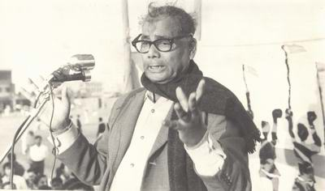

Jasimuddin started writing poems at a young age. As a college student, he wrote the celebrated poem Kabar (The Grave), a simple tone to obtain family religion and tragedy. The poem was placed in the entrance Bengali textbook while he was still a student of Calcutta University. Jasimuddin is noted for his depiction of rural life and nature from the viewpoint of rural people. This had earned the title as Palli Kabi (the rural poet). The structure and content of his poetry bear a strong flavor of Bengal folklore. His Nakshi Kanthar Math (Field of the Embroidered Quilt) and Sojan Badiar Ghat (Gypsy Wharf) is considered two masterpieces and has been translated into many different languages.[citation needed] Jasimuddin was introduced with Abbas Uddin by poet Golam Mostofa in a musical program held in Kolkata in 1931.[8]